🍎 1ST Quarter ICT Lessons 🍎
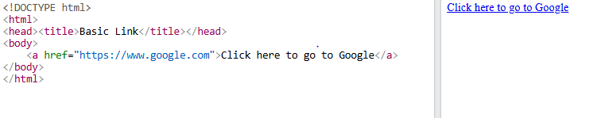
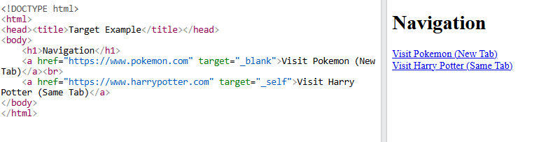
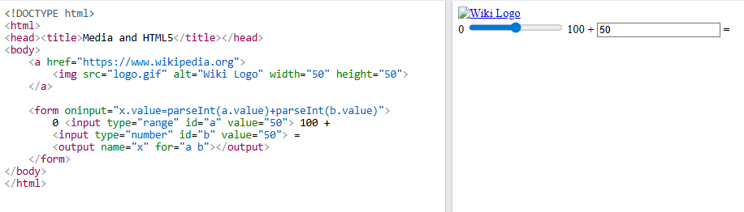
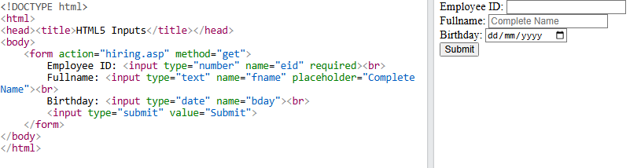
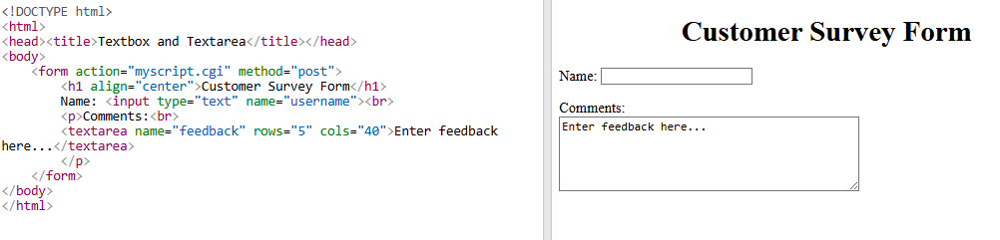
Lesson 1 introduces hyperlinks as essential navigational elements in web design that allow users to move between different pages or documents. These links are created using the a (anchor) tag, where the href attribute specifies the destination URL. Hyperlinks can be represented as underlined colored text or as clickable images, providing a versatile way to connect web content.
The lesson also explains the interactive states of a hyperlink, which include Hover (when the cursor is placed over it), Active (the moment it is clicked), and Visited (after the resource has been accessed). Understanding these states is crucial for creating a user-friendly interface that provides visual feedback to the visitor during navigation.
This lesson focuses on the target attribute, which defines where a linked document will open, such as in the same window (_self) or a new one (_blank). It also introduces "named anchors," which are invisible markers within a document used to create internal links that jump to specific sections of the same page.Additionally, Lesson 2 covers the creation of email links using the mailto: value within the href attribute. This functionality allows users to communicate with web owners easily by automatically opening their default email client with a pre-addressed message.
Lesson 3 distinguishes between external and internal links, where external links lead to different websites and internal links connect pages within the same site. It also warns about "dead links," which occur when a targeted file no longer exists, leading to common errors like "404 File Not Found".The lesson further demonstrates how to use graphics, such as GIFs or images, as clickable links by nesting an img tag inside an anchor tag. This allows designers to create more visually engaging navigation menus beyond standard text-based links.
Lesson 4 explores the enhanced input controls and validation features introduced in HTML5, which are designed to make web forms easier to fill out. It details various input types such as color, date, email, number, and range, each providing a specific interface for data entry.The material also introduces the broader context of form processing, noting that while HTML5 handles the front-end structure, the actual data submission is often managed by server-side technologies like ASP or PHP. These technologies allow for the creation of dynamic web pages that can process and store user information.
This lesson takes a closer look at the input tag, an empty tag used to create various form components like textboxes, radio buttons, and checkboxes. The behavior of the input field is determined by the type attribute, while other attributes like name and value are used to identify the field and set its initial content.It also discusses specialized attributes like checked, which is used for radio buttons and checkboxes to set a default selection without requiring a specific value. The lesson provides examples of how different attributes, such as size, can be used to customize the appearance of these input fields.
Lesson 6 focuses on two primary selection controls: radio buttons and checkboxes. Radio buttons are used when a user must choose exactly one option from a set of few choices, and they are grouped together using the same name attribute.In contrast, checkboxes allow users to select multiple options—or none at all—from a list. Both controls can use the checked attribute to pre-select options for the user, improving the efficiency of the form completion process.
The final lesson teaches how to create an email feedback form, which serves as a communication bridge between website visitors and owners. These forms allow visitors to submit questions or comments that are forwarded directly to a specified email address.
Lesson 7 emphasizes the practical application of previously learned tags to build a complete "Customer Information Form". By combining various input types and selection menus, designers can collect structured data from users in a professional and organized manner.
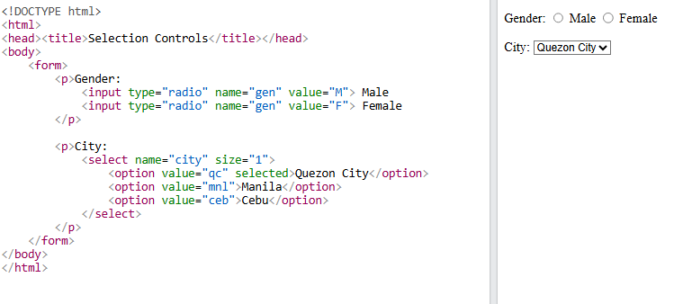
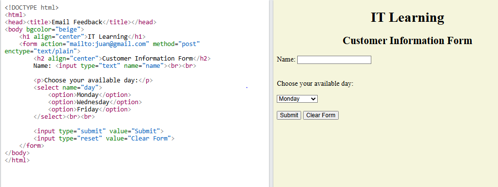
🍎 2ND Quarter ICT Lessons 🍎


This lesson explains what CSS (Cascading Style Sheets) is and why it is used. It covers how CSS separates content from design, the three layers of a webpage (content, presentation, behavior), and the advantages of using CSS such as saving time, easier maintenance, better design flexibility, and improved accessibility.
This lesson focuses on the structure of CSS including selectors, properties, and values. It introduces style sheets as sets of instructions for browsers and explains how CSS separates content from appearance. It also covers the three types of CSS: external, internal (embedded), and inline, along with their syntax, usage, and advantages.
This lesson provides practical examples of applying CSS through inline, internal, and external styles. It introduces the display property and explains the difference between block-level and inline elements. It also discusses the use of div and span tags as container elements to structure webpages and apply targeted styles.
This lesson teaches how CSS rules are written with selectors and declarations. It categorizes style properties (fonts, colors, text, layout, lists, etc.) and introduces CSS classes. Students learn how to define and apply classes, use element+class selectors, and group selectors for efficient styling. It emphasizes reusability and precision in web design.
Lesson 5 discusses CSS selectors, which are used to identify and style specific HTML elements. It introduces six main types: class, element (tag), ID, universal, group, and attribute selectors—each serving a unique purpose in web design. The lesson provides examples and explains when to use each selector.
Lesson 6 teaches how to use CSS to control the size and visibility of elements on a webpage. It explains properties like width, height, and visibility to manage how content appears. It also introduces pseudo-classes that change the style of links when users hover, visit, or click them.


🍎 3RD Quarter ICT Lessons 🍎
Lesson 1 introduces the fundamental concepts of typography in web design, focusing on how CSS controls the styling and arrangement of text to ensure legibility and visual appeal. Key font properties covered include font-family for specifying typefaces, font-size for adjusting text dimensions in pixels or percentages, and font-weight for defining the thickness of characters. Additionally, students learn to use font-style for italics and font-variant for specialized glyphs like small-caps.Beyond font choice, the lesson explores various text properties that manage layout and spacing. These include line-height for vertical spacing, letter-spacing and word-spacing for horizontal gaps, and text-align for horizontal alignment. The lesson also details advanced controls such as white-space management, word-break rules, and text decorations like underlining or shadows, providing a comprehensive toolkit for precise text formatting.
Lesson 2 focuses on the practical application of text formatting techniques, emphasizing how to enhance specific parts of a web document. It covers essential tasks such as creating bold and italicized text, as well as indenting the first line of paragraphs using the text-indent property, which accepts measurements in various units like pixels or percentages. The lesson also teaches how to transform text cases—such as converting text to uppercase or lowercase—using the text-transform property.In addition to basic styling, this lesson introduces methods for improving the visual structure and readability of a page. It explains how to adjust line spacing with the line-height property and how to highlight specific text by adding a background color using the background property. These practical exercises are designed to help students apply CSS properties to real-world coding scenarios, ensuring they can effectively manage both the style and layout of their web content.
Lesson 3 centers on the "Box Model," a core concept where every element on a web page is treated as its own box consisting of margins, borders, padding, and the actual content. Students learn to control these dimensions using height and width properties, while organizing content with block-level tags like div, h1, and p. The lesson also introduces element positioning through four schemes: static, relative, absolute, and fixed, allowing for precise placement of objects on a page.The second half of the lesson expands on layout control through offset properties and float techniques. Offset properties (top, right, bottom, left) work with positioning to define exact distances between elements. Additionally, the lesson covers float for wrapping text around elements, and background properties, including setting background images, controlling their repetition via background-repeat, and specifying their location with background-position.
Lesson 4 explores the customization of borders and tables, teaching students how to define the appearance of element boundaries. It covers the border-width, border-color, and border-style properties, which allow for a wide range of visual effects such as solid, dashed, dotted, or 3D styles like "inset" and "outset". Students also learn how to apply these styles to specific sides of an element using individual properties like border-top-width or border-left.The lesson also introduces the concept of padding, which defines the internal space between an element's content and its border. While HTML padding is often limited to tables, CSS padding can be applied to various elements like paragraphs and images. Finally, the lesson touches upon table-specific styling, such as adding background colors to cells and using external CSS to style entire table structures for a professional look.
🍎 3RD Quarter Browser Outputs 🍎
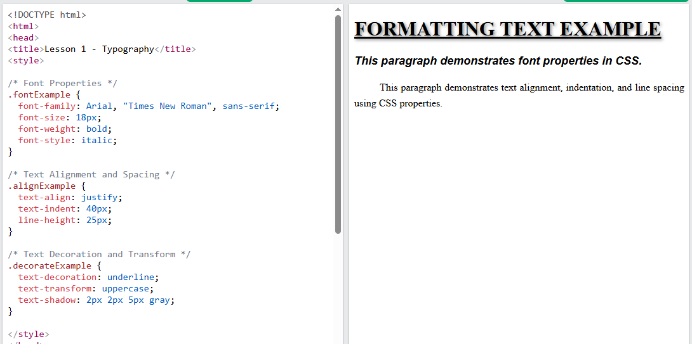
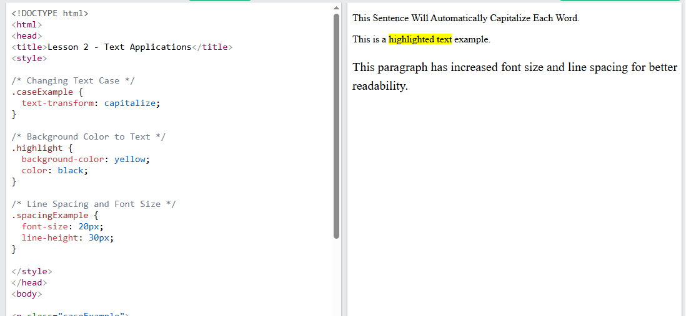
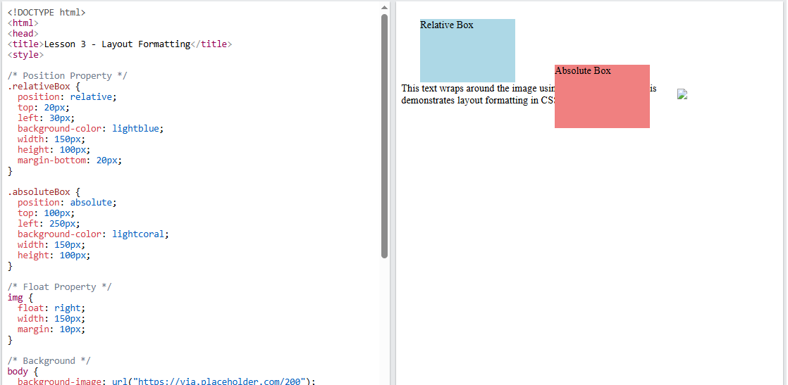
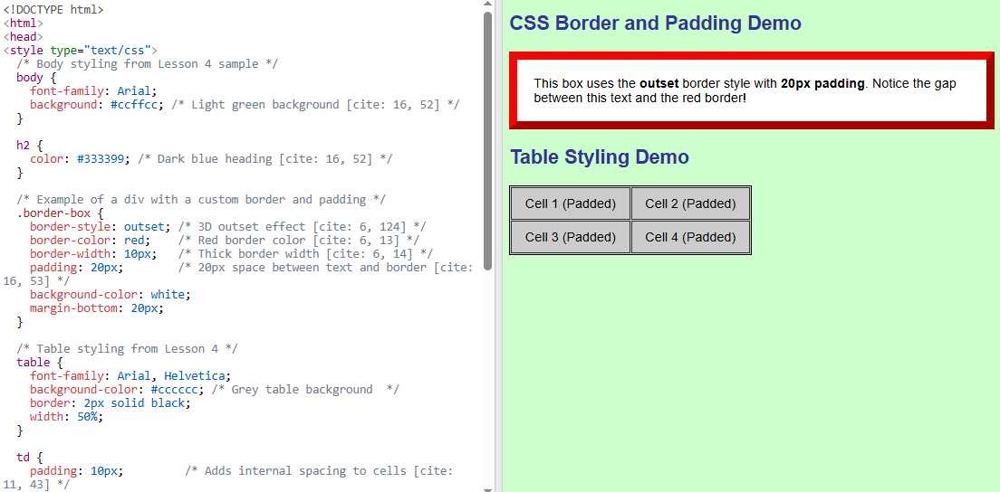